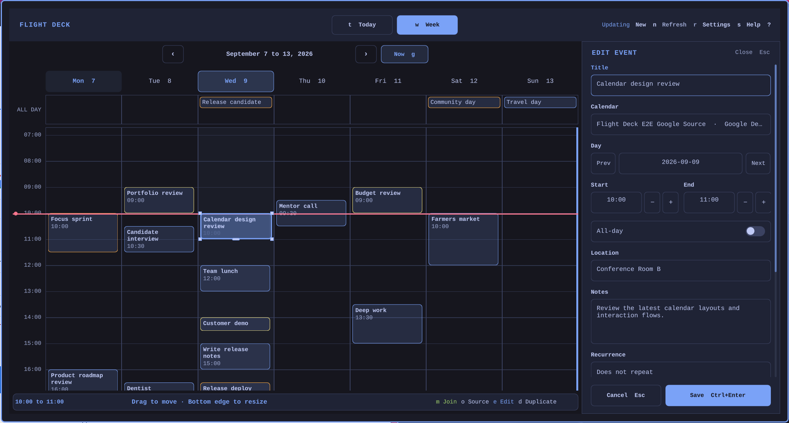

v1.1.0 for Omarchy
Google Calendar and Outlook for the Omarchy bar.
Flight Deck Calendar puts Google Calendar and Outlook in one Omarchy panel. Accounts remain read-only until editing is enabled, and saved changes go directly to the selected provider.

- Providers
- Google Calendar and Outlook.com
- Views
- Today and Week
- Actions
- Create, edit, copy, and open events
- Access
- Read-only by default, with optional editing
Optional editing
Draft locally, then save to one provider.
Create, edit, duplicate, move, and resize an event while the calendar remains visible. Flight Deck sends nothing until you choose Save.
Changing calendars creates and verifies a destination copy first. The original remains unless Flight Deck confirms that it is eligible and you separately approve deletion.

Install Flight Deck
Add Flight Deck from GitHub.
Run the Omarchy plugin command, open Calendars, and connect Google Calendar or Outlook.com in the browser.
omarchy plugin add https://github.com/joryeugene/omarchy-calendar.git --enable